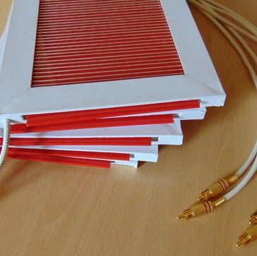
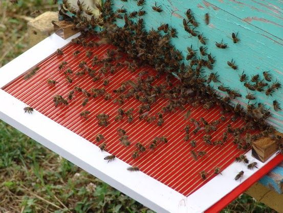
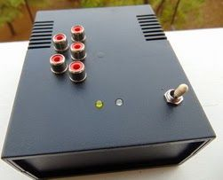

The Apitox collector was named the best innovation at the national beekeeping fair.
Ever since he started keeping bees, Goran Stanojević has never kept them "just for honey". From the very beginning he understood that beekeeping pays off only if you also collect pollen and propolis, raise swarms for sale… Add the forage conditions that get worse and less predictable every year, and this way of thinking becomes all the more important.

Goran thought differently from other beekeepers when it came to bee venom, too. Many asked him how he could count on selling bee venom when our country has no regulations for this product, and therefore no organised buying and no market for it at all. His answer was that the key is to change the way we think about the market – to look at how Western markets work and to go out and find buyers with a finished product.
It makes sense: stored properly, bee venom keeps for several years without losing quality. We believe that, with our effort, things will change here too.
The electrostimulator produces a pulsing electrical signal of a set frequency and amplitude (pulse frequency 50–1000 Hz, voltage 11–42 V), grouped into bursts of a set length (2–3 second pulses) separated by pauses with no signal (3–6 seconds). Microchips on the electrostimulator board make it possible to change these parameters.
In most designs the collector frame is placed outside the hive, at the entrance, and can come in different sizes. When bees land on the plate, they touch the wire grid and close the circuit, which stimulates them. They bend their abdomen towards the plate and, as the sting touches it, release venom onto it.

Technology in every field grows more advanced and complex every day, and venom collection is no exception. The basic principle, however, has stayed the same: we obtain bee venom by electrostimulation, that is, by mild electric pulses. It is not the only way to collect venom, but it is by far the most efficient and the simplest. It is also the least harmful – almost harmless – to the health, quality and strength of the colony. Of course, good beekeeping practice must be followed when collecting venom as well; then there are no negative consequences for the colonies or for individual bees.
The devices available on the market are made in small series by individuals, mostly beekeepers, or manufactured in China. At first glance they are all similar and repeat a similar patent from the mid-1970s. Most consist of a power source (car battery or batteries), an electrostimulator (controlling current, voltage, frequency…) and collector frames (with a wire grid and glass plates).


Beyond their different designs, venom collectors also differ greatly in their electronic parameters. The biggest differences are in the control system (manual or automatic), in how the frequency and amplitude of the output signal are controlled, and in how long the device runs. They also differ in auxiliary features – light and sound indicators for operation and for individual stages.

It took Goran a great deal of time and effort to build his own bee venom collector. He drew on information from the internet and the literature, and on his knowledge of electronics, which is his profession. The goal was to find the optimal electronic parameters, and the only way to do that was to build several models and test each one. After many trials and failures, in 2013 Goran arrived at the device we present here, which has since been refined and upgraded with experience.
The device runs on 4.5 V batteries housed in the electrostimulator casing – far more practical than a car battery. Many days in the workshop and at the apiary produced the best solution: the electronic components built into the electrostimulator allow it to work with an alternating voltage of 23–30 V and an oscillator frequency of 700–1000 Hz, with 3-second pulses and equally long pauses. These settings have proven the best in practice.
There was no doubt about the wire on the collector plate. Stainless steel wire was rejected after the first tests, because silver-plated wire performed better: it conducts better, resists the chemical action of the venom, and silver is antiseptic (less chance of spreading disease in the apiary). The spacing between the wires is 4.2 mm, which testing showed to be optimal.
The glass on the collector plate is 3 mm thick and coated underneath with coloured film, so the venom is easier to see when scraping.
We start collecting bee venom in the second half of April, or slightly earlier, but only once the colonies are strong enough – 6 frames of brood in DB hives, or 8 frames of brood in LR hives.
It all starts by placing the collector plates at the hive entrances. The plate is 15 mm thick and 360 mm long, so the entrance reducer can be removed and the plate put in its place (fixed at the sides with wooden wedges). On bottom boards where the entrance reducer is fixed, the plates are held with plastic clips. The difference between the inside width of the hive (372 mm) and the plate (360 mm) leaves 6 mm on each side so drones can pass freely.


The device is programmed to switch off by itself after 45 minutes; sometimes we switch it off earlier if we see fewer bees on the collector. We then move the plates to other hives, and only after the second or third "treatment" do we change the glass plates and continue with another one.
The best results come in the morning, when bees are most active. During the day we do 4 "treatments" on 10 hives at a time. On average we collect between 5 and 12 grams of venom a day this way. Per hive, that is, per treatment of one hive, we collect 0.1 g to 0.3 g, depending on the strength of the colony.
A teacher at the secondary electrical engineering school in Smederevska Palanka who never wanted to stop at producing honey.
Read the article (in Serbian) →RTS · 29.06.2018.He came up with the idea of collecting venom with specially designed collector plates, right in front of the hive.
Read the article (in Serbian) →
Call us for a quote, or add the collector to your cart and we will get in touch.